2. Product Dashboard#
Context:
With the analytical database in place, the next critical step is to provide the product and management teams with intuitive, self-service access to key metrics through a comprehensive dashboard.
Objectives:
To design and implement an interactive product dashboard in Yandex DataLens that enables monitoring of user engagement, retention, and growth metrics across both messaging and news feed features.
Data Sources:
The dashboard connects to folloing materialized views
mv_app_daily_activity
mv_feed_daily_activity
mv_messenger_daily_activity
Project Resources:
Key Achievements:
Dashboard Canvas Completed: Defined business questions, key metrics, and target audience for the product dashboard
Dashboard Layout Designed: Created comprehensive dashboard mockup with visualization types and layout structure
Yandex DataLens Dashboard Implemented: Built and deployed interactive dashboard in Yandex DataLens
Dashboard Documentation Written: Created comprehensive documentation including filter definitions and metric explanations
Business Impact:
Empowered non-technical teams with self-service analytics capabilities, significantly reducing dependency on data team for routine metric monitoring.
2.1 Data Description#
In the analytical database on ClickHouse, the following materialized views have been created for optimized dashboard performance
Materialized View mv_app_daily_activity
Field |
Description |
|---|---|
date |
Date of activity |
gender |
User’s gender |
age |
User’s age |
source |
Traffic source |
os |
User’s operating system |
city |
User’s city |
country |
User’s country |
total_users |
Total unique active users |
feed_only_users |
Users who only used feed features |
messenger_only_users |
Users who only used messenger features |
both_services_users |
Users who used both feed and messenger |
messenger_users |
Total users who used messenger |
new_users_lifetime_0 |
New users (first activity) |
users_lifetime_7d |
Users with 7+ days since first activity |
new_users_7_days_ago |
New users from 7 days ago (for retention) |
views |
Total post views |
likes |
Total post likes |
Materialized View mv_feed_daily_activity
Field |
Description |
|---|---|
date |
Date of activity |
gender |
User’s gender |
age |
User’s age |
source |
Traffic source |
os |
User’s operating system |
city |
User’s city |
country |
User’s country |
views |
Total post views |
likes |
Total post likes |
posts |
Unique posts viewed |
avg_view_to_like_seconds |
Average time from view to like (seconds) |
feed_users |
Unique feed users |
feed_new_users_lifetime_0 |
New feed users (first feed activity) |
feed_users_lifetime_7d |
Feed users with 7+ days since first activity |
feed_new_users_7_days_ago |
New feed users from 7 days ago |
Materialized View: mv_messenger_daily_activity
Field |
Description |
|---|---|
date |
Date of activity |
gender |
User’s gender |
age |
User’s age |
source |
Traffic source |
os |
User’s operating system |
city |
User’s city |
country |
User’s country |
total_senders |
Unique users who sent messages |
total_receivers |
Unique users who received messages |
new_users_lifetime_0 |
New messenger users (first message) |
users_lifetime_7d |
Messenger users with 7+ days since first activity |
new_messenger_users_7_days_ago |
New messenger users from 7 days ago |
messages_sent |
Total messages sent |
avg_time_between_messages_sent |
Average time between consecutive messages (seconds) |
2.2 Dashboard Canvas#
Define dashboard canvas for the product dashboard.
Users and Context
Who will use it and their roles?
Product Manager
Responsible for the overall product health metric
Marketing Manager
Evaluates the effectiveness of acquisition channels
Data Analyst
Performs deep data analysis
How often will they use it?
Regularly (daily/weekly)
Under what conditions?
During meetings to discuss strategy and make decisions
PM will study the dashboard on their laptop to prepare for meetings or form hypotheses
Urgent requests from management (e.g., checking if activity “dropped” after a release)
On what devices?
Primarily desktop (laptop/PC) and projector
Mobile version has low priority
How long will a single interaction take?
From 5 to 30 minutes
A quick glance to check metrics and longer immersion to analyze reasons for changes and find insights
Understanding the Task
Main dashboard goal
To create a single point for monitoring and analyzing interactions between the two key services (news feed and messenger).
Dashboard type
Overview
Why the task is important
The company lacks a single source of truth. Different departments (management, marketing, product) have different, often conflicting, views on what is happening with the business.
Without a dashboard, it is difficult to answer the main questions: What is happening? and Why?
Why the task is important?
Will help identify and strengthen the intersection points between services that retain users.
Will reduce time spent gathering data from various sources before each meeting.
A single entry point will reduce the time needed to access and share information within the team.
Visualization of key metrics will improve the quality of decision-making.
How will we know the goal has been achieved?
Users reference dashboard data during daily meetings.
Time spent preparing for planning meetings is reduced (e.g., from 2 hours to 15 minutes).
The number of hypotheses generated has increased.
Metrics, Dimensions, and Data Sources
Metrics
Total number of users
Number of users who used only the feed
Number of users who used only the messenger
Number of users who used both services
Number of new users
Day 7 cohort retention
CTR
Average number of messages per user
Unique number of posts
Total number of views
Total number of likes
Average number of likes per post
Average number of posts per user
Average number of views per user
Average number of likes per user
Average time between like and view of the same post
Total number of message senders
Total number of message receivers
Ratio of message receivers to message senders
Total number of messages sent
Average time between messages sent by a single user
Dimensions
Time
Gender
Age Group
Country
City
Os
Source
Sources
materialized view mv_app_daily_activity
materialized view mv_feed_daily_activity
materialized view mv_messenger_daily_activity
Questions and Business Decisions
What are the values of the metrics (listed above) for the last day and what is the trend over the last month?
How have the metrics changed compared to the previous week?
How does the metric trend this month differ from the same trend last month?
In which cities/countries, which age groups, from which devices are the users who use the app in general and each service separately?
Which channel brings more users who only use the feed / only use the messenger / use both services?
What is the number of users by traffic source and OS (heatmap)?
Which traffic source brings users who stay in the app longer?
In which age groups are the average metrics per user higher?
How do the conducted advertising campaigns reflect on the dynamics of the metrics?
Visualization for Questions and Business Decisions
App Overview Tab
KPI cards with values for the last completed day and WoW change with color indicators for the following metrics:
Total Users
Feed Only Users
Messenger Only Users
Both Services Users
New Users
Retention 7D
CTR
Messages per User
Under each KPI card: WoW comparison and monthly trends (sparkline)
Table with all these metrics broken down by Gender, Age Group, Os, Source, Country, City
Feed Deep Dive Tab
KPI cards with values for the last completed day and WoW change with color indicators for the following metrics:
Total Users
New Users
Retention 7D
CTR
Unique Posts
Total Views
Total Likes
Likes per Post
Posts per User
Views per User
Likes per User
Avg View-to-Like Time
Under each KPI card: WoW comparison and monthly trends (sparkline)
Table with all these metrics broken down by Gender, Age Group, Os, Source, Country, City
Messenger Deep Dive Tab
KPI cards with values for the last completed day and WoW change with color indicators for the following metrics:
Total Senders
Total Receivers
New Users
Retention 7D
Receiver/Sender Ratio
Messages Sent
Avg Messages per Sender
Avg Time Between Messages
Under each KPI card: WoW comparison and monthly trends (sparkline)
Table with all these metrics broken down by Gender, Age Group, Os, Source, Country, City
2.3 Dashboard Mock-up#
Create dashboard mock-up for the product dashboard.
App Overview Tab
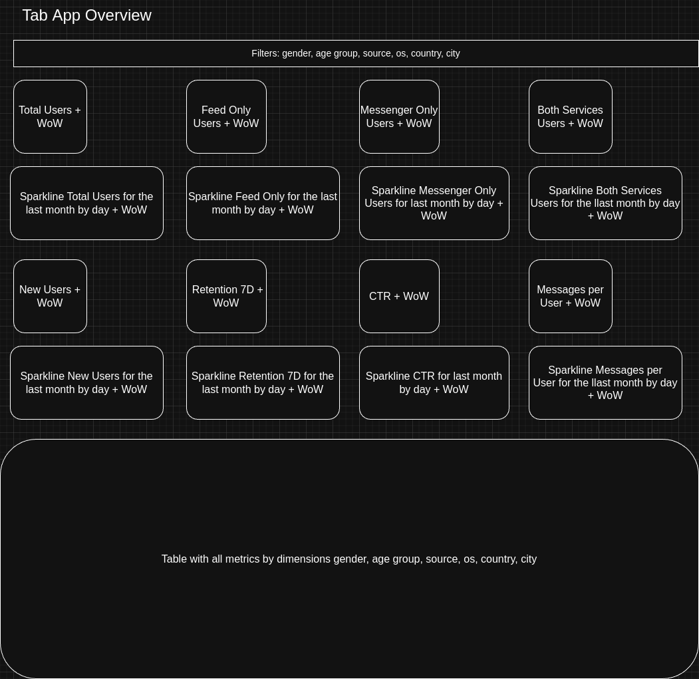Feed Deep Dive Tab
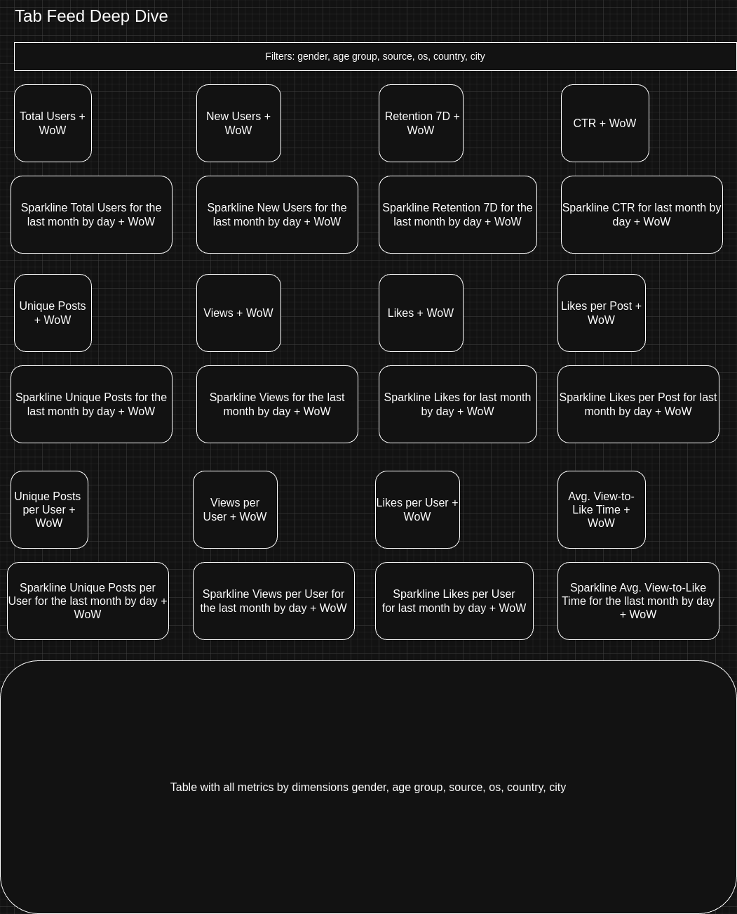Messenger Deep Dive Tab
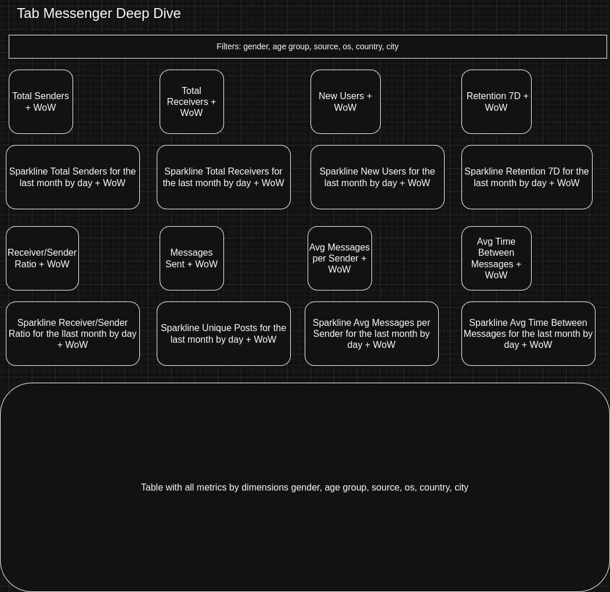2.4 Dashboard Documentation#
Create dashboard documentation for the product dashboard. This documentation will be placed on a separate tab within the dashboard itself for easy user reference.
ℹ️ General Information
The Feed & Messenger Performance Dashboard provides comprehensive insights into user engagement, content performance, and messaging activity within our social application. This tool enables data-driven decision making for product development and user growth strategies.
Dashboard Owner: Pavel Grigoryev
Data Coverage: Last 2 Months
Reporting Period:
KPI Cards (Factoids): Show values for the last complete 24-hour period (previous full day)
Sparklines: Display trends comparing the current month vs previous month
Breakdown Tables: Use data from the last complete 24-hour period (previous full day)
This approach ensures consistent daily performance tracking while providing monthly trend context.
Abbreviations:
Abbreviation |
Full Name |
|---|---|
WoW |
Week-over-Week |
CTR |
Click-Through Rate |
DAU |
Daily Active Users |
Retention 7D |
Retention 7 Days |
DAU / WAU |
Daily Active Users / Weekly Active Users |
📈 Tab Overview
📱 App Overview Tab
Key Metrics:
Total Users - Count of unique users who performed any action in the application
Feed Only Users - Users who only interacted with the feed (viewed or liked posts)
Messenger Only Users - Users who only used the messaging feature
Both Services Users - Users who interacted with both feed and messenger
New Users - Users who registered and first used the application
Retention 7D - Percentage of users from a cohort who were active on the 7th day after their first activity
CTR - Click-through rate: ratio of likes to views in the feed
Messages per User - Average number of messages sent per active user
All metrics include WoW comparison and monthly trends (sparkline).
📰 Feed Deep Dive Tab
Key Metrics:
Total Users - Count of unique users who performed any action in the application
New Users - Users who registered and first used the feed
Retention 7D - Percentage of users from a cohort who were active on the 7th day after their first activity
CTR - Like-to-view ratio
Unique Posts - Number of distinct posts viewed
Total Views - Overall post impression count
Total Likes - Number of likes received
Likes per Post - Ratio of likes to posts, measuring content quality and engagement
Posts per User - Average unique posts viewed per user
Views per User - Average views per user
Likes per User - Average likes per user
Avg View-to-Like Time - Average time from view to like action
All metrics include WoW comparison and monthly trends (sparkline).
💬 Messenger Deep Dive Tab
Key Metrics:
Total Senders - Number of unique users who sent messages
Total Receivers - Number of unique users who received messages
New Users - Users who registered and first used the messenger
Retention 7D - Percentage of users from a cohort who were active on the 7th day after their first activity
Receiver/Sender Ratio - Ratio of message receivers to senders, measuring audience reach and network effect
Messages Sent - Total number of messages sent in the platform
Avg Messages per Sender - Average number of messages sent per active sender
Avg Time Between Messages - Average time interval between consecutive messages from the same user
All metrics include WoW comparison and monthly trends (sparkline).
🔓 Access Information
Access Level: Available to all
🗃️ Data Sources & Technical Details
Data Sources:
Data is sourced from the analytical database.
The dashboard connects to folloing materialized views
mv_app_daily_activity
mv_feed_daily_activity
mv_messenger_daily_activity
Calculation Methodology:
WoW (Week-over-Week) Growth: Calculated as (Metric Value for Current Period / Metric Value for Previous Week) - 1
Retention 7D: Percentage of users from a cohort who were active on the 7th day after their first activity
CTR: Calculated as (Total Likes / Total Views) for feed content
❓ Frequently Asked Questions
What does WoW mean and how is it calculated?
WoW stands for Week-over-Week.
It compares the current period (usually yesterday) to the same day in the previous week
This helps identify weekly trends and seasonality effects
It is calculated as: (Metric Value for Current Period / Metric Value for Same Day Previous Week) - 1
How is Retention 7D defined?
Retention 7D measures the percentage of users from a specific cohort (e.g., users who joined on a specific day) who returned and were active exactly on the 7th day after their first activity. This is a classic retention metric that shows the ability to retain users one week after their initial engagement.
What is shown on the sparkline charts?
The sparklines provide a 30-day visual history of each metric’s performance, allowing quick identification of trends, spikes, or drops in user engagement and platform performance.
2.5 Dashboard Implementation#
Based on the dashboard mockup, a dashboard was created using the BI tool Yandex DataLens.
The dashboard is available at the following link: Feed & Messenger Performance Dashboard
Screenshots of the dashboard are provided below.
📱 App Overview Tab#
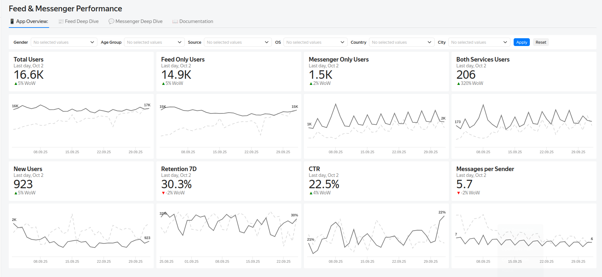 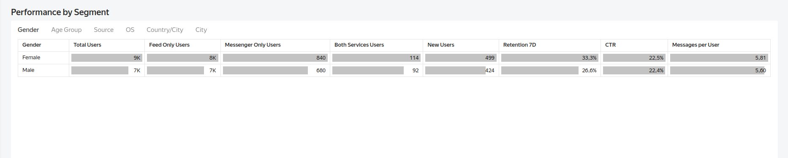📰 Feed Deep Dive Tab#
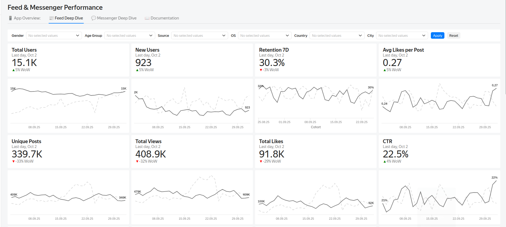 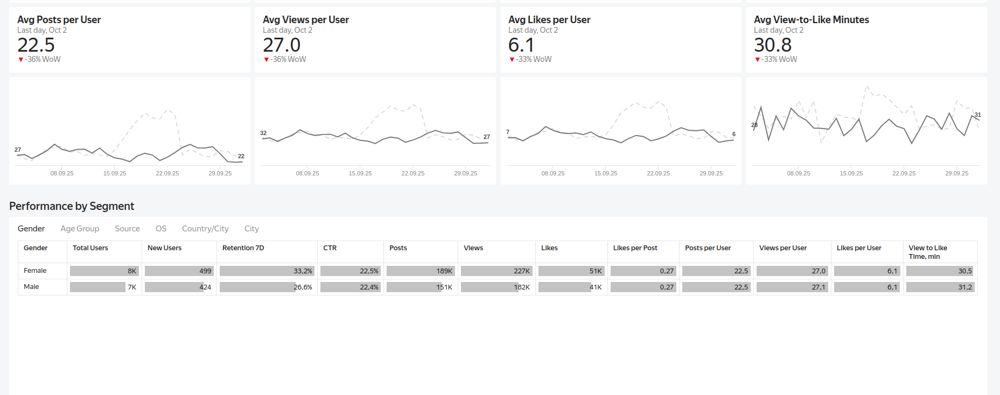💬 Messenger Deep Dive Tab#
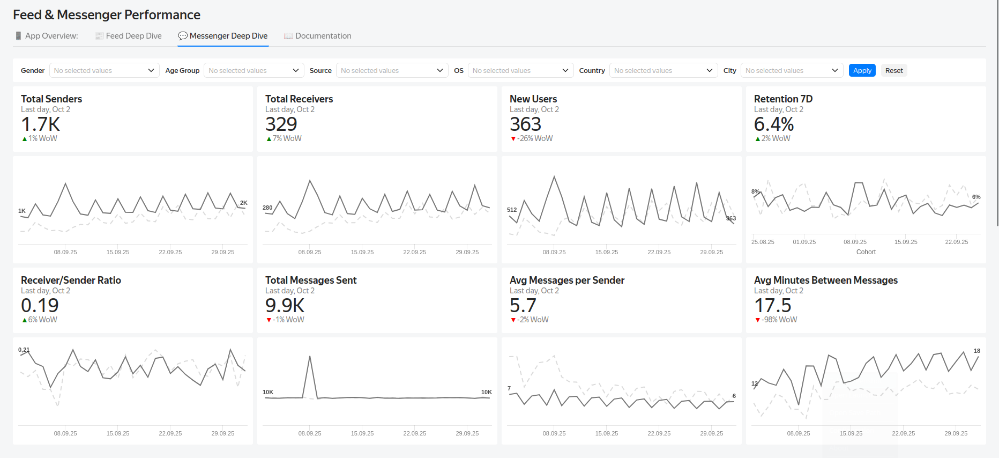 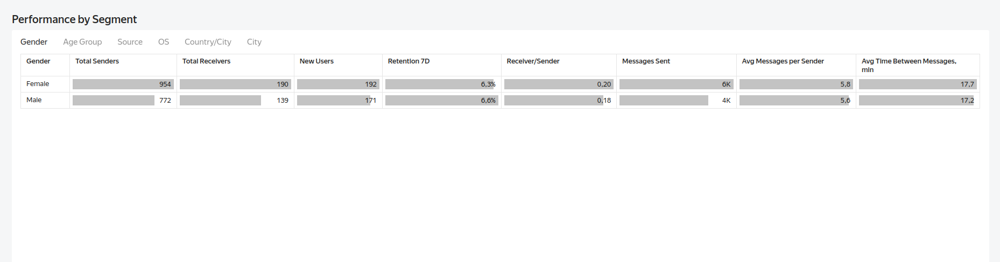📖 Documentation#
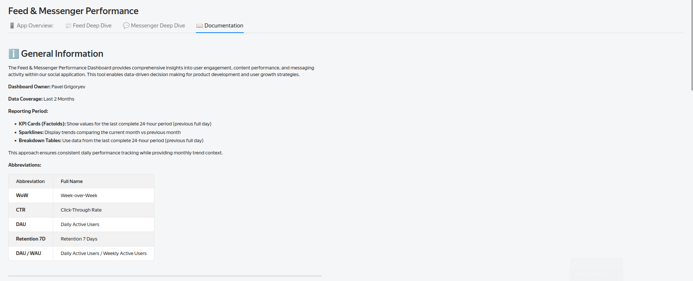 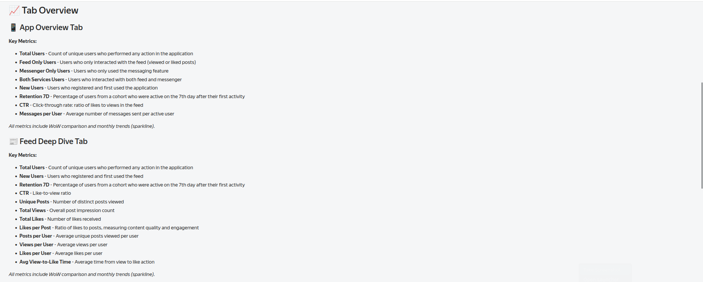 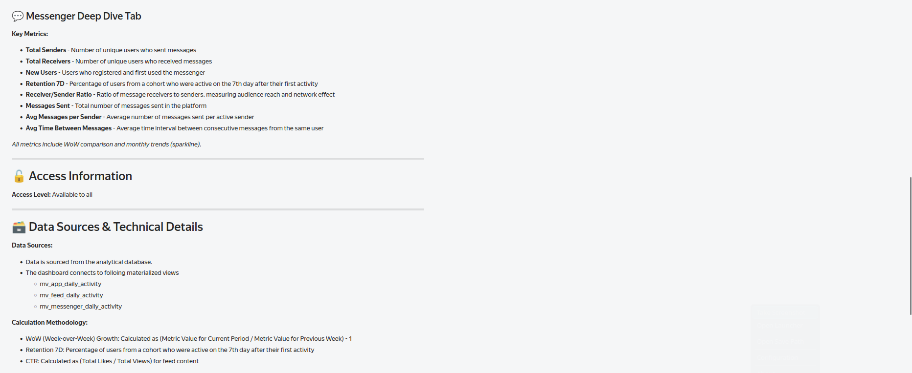2.6 General Conclusion#
Dashboard Canvas Completed: Defined business questions, key metrics, and target audience for the product dashboard
Dashboard Layout Designed: Created comprehensive dashboard mockup with visualization types and layout structure
Yandex DataLens Dashboard Implemented: Built and deployed interactive dashboard in Yandex DataLens
Dashboard Documentation Written: Created comprehensive documentation including filter definitions and metric explanations